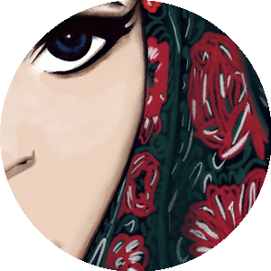
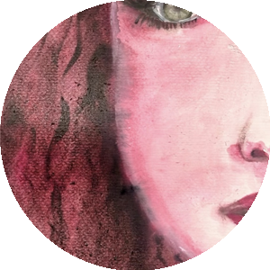
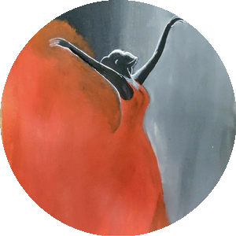
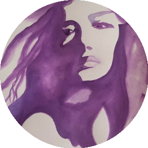
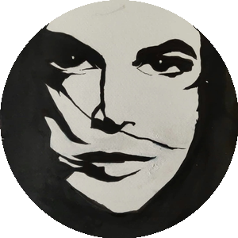
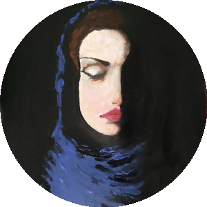

I'm a .NET full-stack developer with 6 years of experience at Cognizant, currently pursuing a Master's focused on AI and Data Science in the United States. My interest in AI/ML grew organically from using tools like GitHub Copilot in Visual Studio, where I discovered how much faster and more effective my development work could become. That curiosity led me to explore the field more deeply.
Outside of development, I'm also an artist. I've been sketching for most of my life and started acrylic painting shortly before moving to the US. For me, painting feels like a form of meditation, similar to a yoga session. I enjoy exploring different creative crafts, including pottery, and I also play table tennis, a hobby I picked up during my time at Cognizant.
I don't have one fixed technical goal right now, but I'm someone who's always curious to learn new things at work, whether that's deployment processes, Stripe integrations, Entra ID, or whatever comes up. At the same time, I try not to lose sight of things outside of work that matter to me, like painting and table tennis. I once set a goal to paint at least once every 15 days, and though other commitments have made that harder to keep up with, I don't want to force it and risk losing my love for it completely. I'd rather stay curious and consistent in my own way, both technically and creatively.
"I bring a fast, reliable approach to problem-solving (colleagues often point to how quickly I resolve bugs), paired with a habit of asking clarifying questions that has, more than once, uncovered real requirement changes others missed. I believe in being a strong team contributor, but I also hold myself to learning everything I can hands-on, rather than relying only on what gets divided out to me. That combination of curiosity, thoroughness, and follow-through is what I bring to any team or project."
This portfolio is built primarily for hiring managers and recruiters evaluating candidates for AI/ML and full-stack development roles, as well as academic reviewers assessing my growth during my Master's program. It's relevant to them because it shows more than a list of skills: it demonstrates hands-on AI tool-building (Artifact 1), the ability to communicate technical concepts clearly (Artifact 2), and the interpersonal and leadership judgment needed to introduce AI into real teams (Artifacts 3 and 4) — the combination employers and program evaluators actually look for when assessing someone moving into applied AI/ML work.
I paint in my off hours — here's a tiny canvas for you to leave a stroke of your own before you go.
Pranitha picks up new tools fast and consistently finds edge cases the rest of the team missed.
Reliable, thorough, and always asking the right clarifying questions before diving in.
One of the fastest bug-fixers I've worked with. And somehow still finds time to paint.
I made a chatbot to learn how AI tools work.
This artifact documents my first hands-on experiment with building an AI tool rather than just using one — a chatbot that walks painters through technique and material questions.
I wanted to learn how different AI tools work, and I also wanted to solve a real problem I personally have: struggling to figure out the right materials and techniques when trying a new painting style, like alcohol ink painting.
I tested a prompt in three separate chats using the same LLM and got almost similar responses, except for small differences in the color palettes and how each described the boards and painting process. Then I practiced with a custom GPT by giving it my image and turning it into a cartoon image, along with some details about myself. Third, I went to STORM AI and asked it to create an article on oil painting techniques, but it didn't accept my prompt directly. Instead it suggested a few options based on what I gave, and when I selected one of those, it started researching and then creating an article. After that, I did some problem-solving and empathy reflections, and finally built a bot to create a Painting Techniques Assistant.
I planned it first, then tested some prompts in the same LLM and also in a different one (the custom GPT), and then tried building the bot.
Claude and ChatGPT for prompt testing and comparison, a custom GPT for image-to-cartoon generation, and STORM AI for guided article research. The final chatbot was built and hosted as a shareable ChatGPT custom bot.
STORM AI didn't accept my prompt directly, which stalled the plan early on. I worked with the options it suggested instead, letting it guide the research and article from there rather than forcing my original prompt.
This artifact is a complete setup of creating a product. It shows that I can take a project from planning all the way to producing a new product.
Since I am both a developer and an artist, I find it easier to build and plan a product like this, especially one focused on painting techniques. My chatbot greets the user well, asks questions, replies accordingly, gives suggestions, and also provides safety measures.
AI is everywhere these days, and it makes developing a product faster. My project shows that I can use AI tools to actually build something, not just talk about them.
Explaining a complex technical distinction through real-world examples.
Same problem, two different tools. Here's how to tell them apart.
To explain, without relying on jargon, when a problem calls for traditional machine learning versus deep learning — using two contrasting real-world cases instead of abstract definitions.
I picked two problems with a clear structural difference (structured tabular data vs. raw pixel data), researched how each is actually solved in practice, then built simple visual mockups of each approach so a non-technical reader could see the distinction, not just read about it.
Web research on real-world fraud detection and facial recognition systems, and hand-built HTML/CSS visualizations (the data-table scan and pixel-reveal grid) to illustrate each concept.
The real challenge was explaining a complex technical distinction without leaning on jargon. I solved it by grounding each concept in a concrete, real-world example instead of an abstract definition.
Banks flag fraud with simple ML. Structured data like amount and location can just be queried directly. Deep learning would be slower, costlier, and harder to explain.
Structured fields can be queried directly, no pattern-learning needed.
Face ID needs deep learning. A single pixel means nothing on its own. Only by finding patterns across all pixels together does a face emerge. Simple ML tops out under 10% accurate here.
One pixel means nothing alone; the pattern only emerges together.
I can turn a complex technical distinction into something anyone can follow.
A different skill than Artifact 1: analytical reasoning over hands-on building, with depth for the hiring manager who wants to see it.
IBM. (n.d.). What is fraud detection? IBM Think. https://www.ibm.com/topics/fraud-detection
Google Cloud. (n.d.). What is facial recognition? Google Cloud Vision AI. https://cloud.google.com/vision
A personal reflection on navigating pushback to AI adoption at work, and what biblical leadership principles taught me about patience and timing.
Not every challenge in AI/ML work is technical. Sometimes the hardest part is helping the people around you adapt to it.
To reflect on and articulate what I learned about patience, timing, and trust while navigating a manager's resistance to my faster, AI-assisted workflow.
As I started using AI tools to work more efficiently, I ran into real friction with a lead who was uncomfortable with that shift. My faster turnaround times led to more scrutiny, not less, including delays on my own work and fewer opportunities to grow in areas I had specifically asked to develop. This reflection walks through how I approached that tension: choosing patience over confrontation, staying consistent so that when I did speak up it carried real weight, and drawing on the biblical example of Esther, whose strength came from patience and strategic timing rather than force.
I sat with the situation for a while before writing anything, then drew a parallel to the Book of Esther's approach to timing and strategic patience, and structured the reflection as a five-stage arc from friction to being heard.
This was a written reflection rather than a technical build — no software tools beyond a text editor and close reading of the biblical text referenced below.
The challenge wasn't the technology, it was organizational trust. Rather than pushing back aggressively or disengaging entirely, I chose a middle path: staying respectful, continuing to look for solutions on my own, and preparing to raise the issue directly only when the timing was right, similar to how Esther prepared before approaching the king rather than acting on impulse.
Like Esther preparing before approaching the king: each stage built the standing to be heard, rather than forcing the moment.
This artifact shows that I can navigate resistance to new technology thoughtfully, without losing self-respect or burning relationships, a skill that matters as much as technical ability when introducing AI tools into any team or organization.
Unlike Artifacts 1 and 2, which show what I can build and explain, this artifact shows how I handle the human side of AI adoption: the skepticism, friction, and change management that come with introducing new tools into an existing team culture.
AI/ML careers increasingly involve convincing others, not just building things. Being able to navigate resistance calmly and strategically is a real, transferable leadership skill in this field.
A different skill than Artifacts 1 and 2 again: emotional intelligence and adaptive leadership under real workplace pressure, showing that my growth in AI/ML isn't only technical.
The Bible. (n.d.). New International Version. Biblica. https://www.biblegateway.com (Book of Esther).
A devotional reflection on how clear communication protects both trust and technical accuracy.
Not every technical problem starts with bad code. Some start with communication that was never as clear as everyone assumed it was.
To build a personal, repeatable practice around requirement clarity after being held accountable for a gap that was never clearly documented or assigned.
Whenever a requirement is unclear, I won't move forward with development until I understand it, even if that means asking a question that feels obvious. I ask in a shared team channel rather than privately, so everyone sees the question and the answer, and I link the relevant user story as a reference point. When I apply a fix, I document it with recordings or screenshots so there's a clear record of what changed and why. This reflection grew out of a real situation: a bug appeared on one page, and an identical bug existed on a related page, but because there was no clear process for linking the two, I was blamed later for not "checking the entire flow," even though nothing in the original requirements asked for that. Afterward, I changed my own practice, asking that each page get its own explicitly linked bug ticket, so the connection between them is documented instead of assumed. This experience connects to 1 Corinthians 14:8-9, where Paul writes that a trumpet has to sound a clear call or it's just noise. An unclear requirement isn't just a weak signal, in a business context it can function like no signal at all, and yet the consequences of that gap often land on the person closest to the work rather than the source of the ambiguity.
After a bug on one page surfaced an identical, undocumented bug on a related page, I traced why the connection had never been flagged, then changed my own workflow: asking clarifying questions publicly in the team channel, linking the relevant user story, and documenting fixes with recordings or screenshots so the record speaks for itself.
Team chat channels for public clarification threads, linked user-story references, and screen recordings/screenshots for fix documentation — process discipline more than a specific tech stack.
The real challenge was being held accountable for gaps that were never clearly assigned or documented in the first place. Rather than absorbing that quietly, I built a personal practice around it: ask clarifying questions publicly, document the ask as proof it was raised, and push for clearer bug-tracking conventions going forward so the same ambiguity couldn't repeat itself.
"A trumpet must sound a clear call, or it's just noise." — 1 Corinthians 14:8-9
This reflection shows that I treat precise documentation and clear requirements as a professional discipline, not an afterthought. That same discipline matters directly in AI/ML work: an ambiguous labeling instruction or a poorly specified prompt produces the same kind of downstream failure as an ambiguous development requirement.
Unlike a purely process-driven habit, this practice is grounded in a value I hold intentionally rather than a rule I follow by default. Framing it through 1 Corinthians 14:8-9 shows that my communication style comes from a deeper conviction about clarity, not just professional convention.
AI/ML projects live or die on clear specifications, whether that's a labeling guideline for a training dataset, a prompt, or a requirement handed to a data pipeline. This reflection shows that I already practice the discipline of removing ambiguity before building anything, a mindset that transfers directly into ML requirement-gathering and dataset documentation.
Each artifact in this portfolio highlights a different skill: Artifact 1 shows hands-on building, Artifact 2 shows technical communication, Artifact 3 shows adaptive leadership under organizational resistance, and this artifact shows a values-driven discipline around clarity and documentation. Together, they round out both the technical and human sides of working in AI/ML.
The Bible. (n.d.). New International Version. Biblica. https://www.biblegateway.com (1 Corinthians 14:8-9).